Queenstown
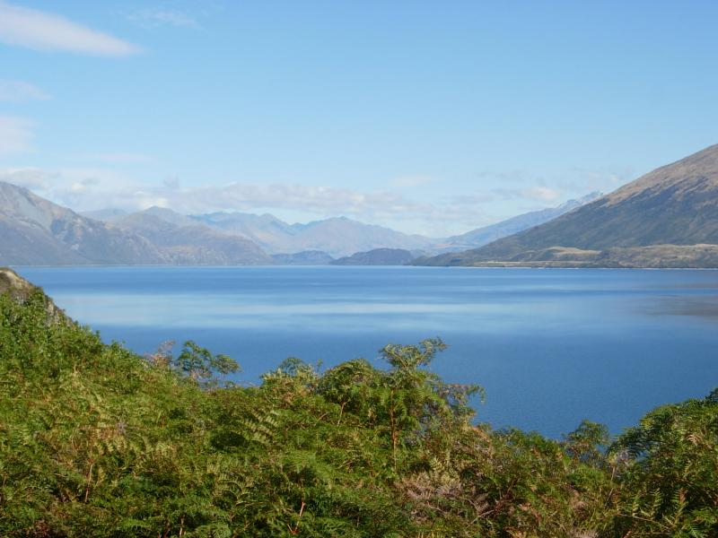
Queenstown is a small tourist/party town on the north shore of Lake Wakatipu..
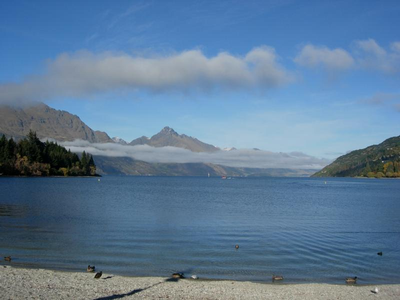
The Maori name for New Zealand is Aotearoa (long white cloud). Actually, the Maori had no name for the whole thing, but since NZ is officially bilingual, one had to be invented.
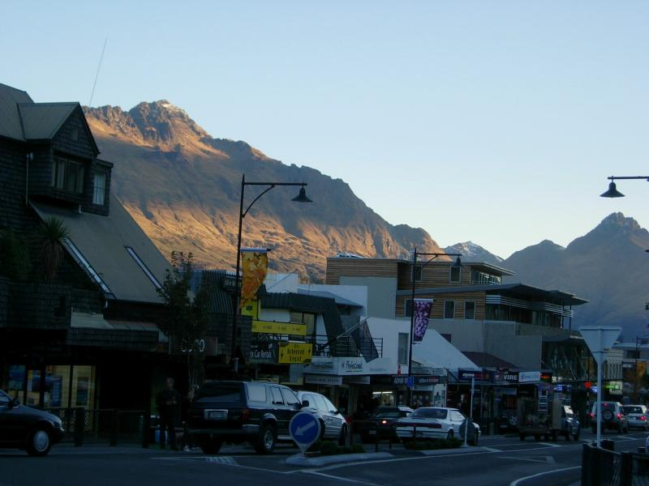
The town iself is restaraunts, dance clubs, and places to book action sports (the world's original and tallest bugee is there, along with jetboating down the Anduin (sigh), paragliding, skydiving, skiing, etc.
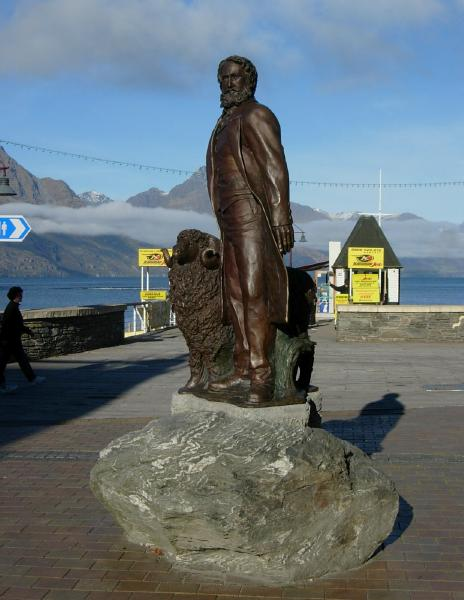
Queenstown's founder, William Rees, and friend. Rees started as a sheep farmer, then got rich selling prospecting supplies during the gold rush of 1862.
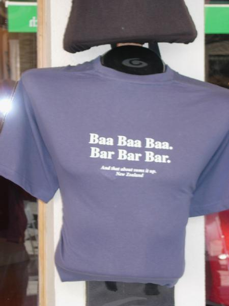
You said it, I didn't. (In New Zealand, the first two lines are prounonced identically.)
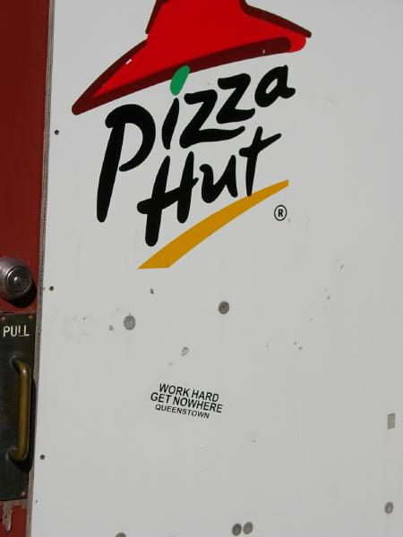
Inside view of the tourist industry.
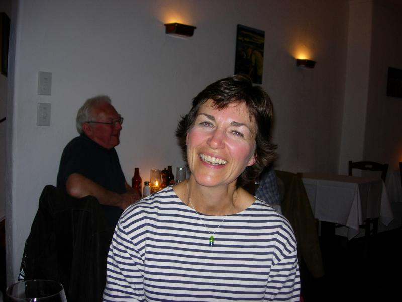
Brenda and I became insta-friends on the long bus ride back from Milford Sound. On the boat, she kept saying "It's just like home (Calgary)". She's on her way back to Calgary after a month with a girlfiend in Oz recovering from a relationship disaster.
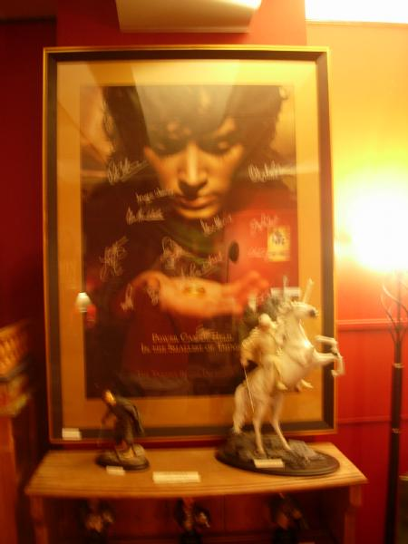
LoTR poster signed by the cast members (not for sale).
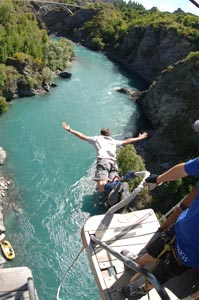
This is the original bungee site--43 meters down. Wanted to test my limits on this, but got washed out due to the laminectomy. Watch the guy's back motion in the movie clip below, and you'll see why you have to have all your discs to do this.
Top
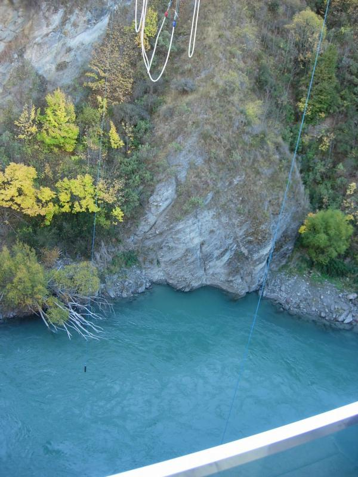
Middle
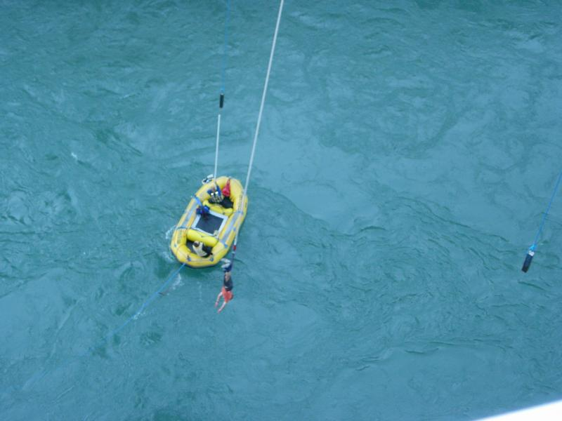
Bottom
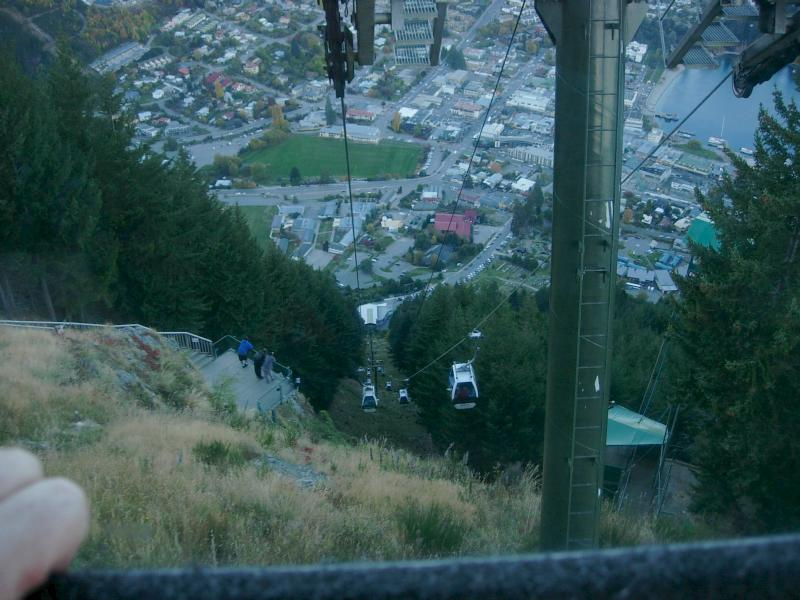
So then I took the world's steepest gondola ride to a tourist trap on top. Not exactly the same thrill level.
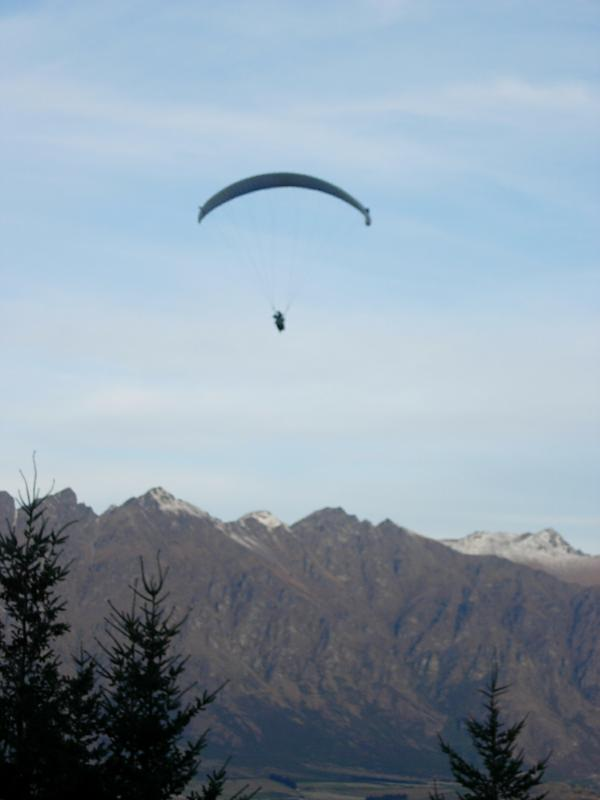
There's paragliding from the top. But I've decided that I'll keep my life-threating activities down to one (motorcycle).
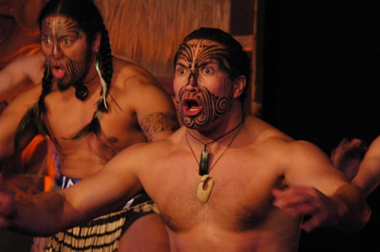
And a Maori barbershop quartet (this pic is showing the haka; the singing is on the link below).
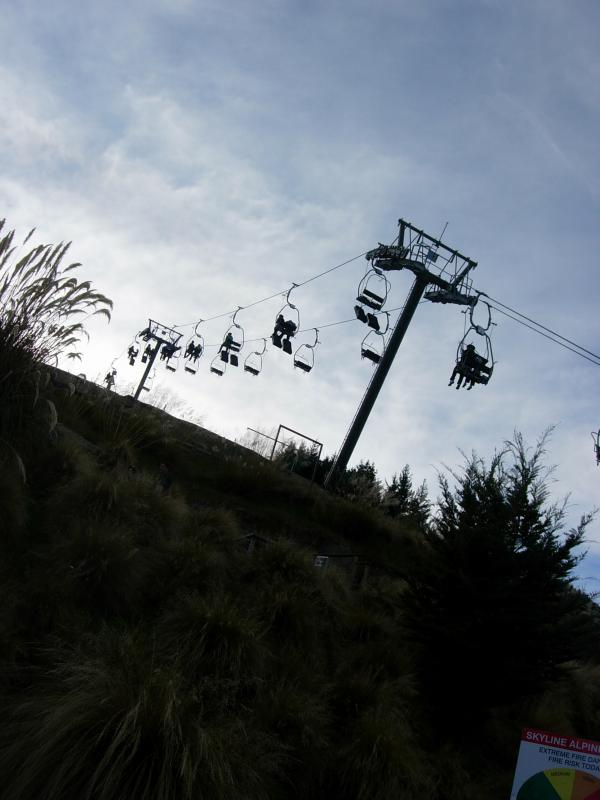
Chairs take you further up to the "luge" course
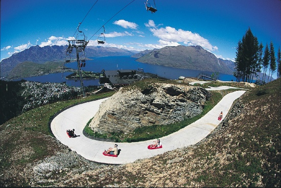
This was just too much fun. The adults wanted to speed down; the little kids were being cautious. Addictive.